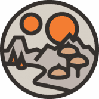 Decentraland Decentraland 市场允许用户浏览、购买、出售和管理 LAND 代币。 Marketplace 是一个建立在以太坊上的完全去中心化、零费用的应用程序。 测试你的想象力极限 使用简单的 Builder 工具创建场
Decentralized Community Investment Protocol DCIP 去中心化社区投资协议 (DCIP) 是 BEP20 币安智能链网络上的第一个投资即服务 (IaaS) 和完全去中心化的投资基金代币，与同一网络上的竞争对手代币不同，DCIP 拥有真
DecentraWeb DecentraWeb 是以太坊区块链上 DNS 基础层协议的去中心化实现，允许用户无需许可地将顶级域 (TLD) 注册为 NFT。 DWEB 价格实时数据 今天的 DecentraWeb 实时价格为 0.188289 美元，24 小时交易
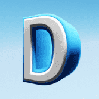 Decentribes Decentribes 是一款即将推出的 Play to Earn Massive Multiplayer Online 游戏，玩家在区块链上拥有土地和物品。 游戏将在浏览器中实时进行，每个玩家都可以创建一个头像并访问任何一块土地 - 单
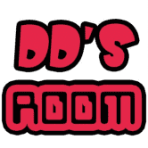 DeeDee's Room - DXL Finance DeeDee 的房间是 DexterLab 分层 dapp 的第二层。它为我们的第一层带来了许多新功能。目前我们包括诸如收获税、APR 提升、反鲸鱼等功能。 DexterLab 是 2.0 分层农业解决方案，它在
DEFIGO NETWORK 关于项目 DEFIGO WALLET DEFIDEX SWAP FALCON LAUNCHPAD DEFIGO FARM NFT MARKETPLACE DEFIGO MERCH DEFIGO NETWORK 是一个由 6 种产品组成的生态系统，其中包括： 钱包，您可以在其中在区块链之间交换资产或简单地存储您的资金 跨链
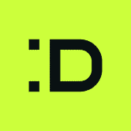 DeFiHelper DeFiHelper 是一种非托管投资助手，可帮助任何规模的投资者轻松管理和自动化其跨 500 种协议的 DeFi 投资。 建立和赚取 对于 DFH 来说，快速行动至关重要——添加新功能、连
Defina Defina Finance 是一款在线区块链游戏，它利用并结合了去中心化金融 (Defi) 和 NFT，让玩家可以拥有自己的游戏资产并通过游戏和训练将其货币化。 Defina 的愿景是将区块链带
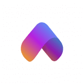 DeFine DeFine 的核心是社交。 DeFine 旨在为 web 3.0 构建一个基于 NFT 的去中心化社交网络。 主要亮点包括： 首先，一个独特的基于 NFT 的社交档案系统，赋予用户特殊的创世徽章，这
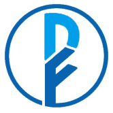 DeFiner DeFiner 的下一代产品 DeFiner2.0 通过创建 100% 无许可借贷协议成功解决了这一借贷问题。在 DeFiner 2.0 中，任何人都可以使用他们选择的任何代币或数字资产来创建自己的借贷池。 每
DefiNova 第一个自动 GameFI 平台，其目的是教授加密货币的收益和自动化算法的管理。 Definova 今天的价格为 3.21 美元，24 小时交易量为 143.00 美元，市值为 0.00 美元，市场支配地位为 0
DefiPanzer Defi Panzer 是基于区块链的终极战略射击游戏大师，基于 Binance Smart 链构建的装甲战争艺术，专注于游戏化并推广游戏赚钱概念。 Defi Panzer 是基于区块链的战略坦克战游戏，建立
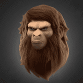 (B)APETAVERSE (B)APETAVERSE 是 BAPEFAM 聚集在一起的虚拟世界，将收藏品的目的提升到一个新的水平。 从官方的 A BATHING APE®️ 概念化，人猿之王将成为 (B)APETAVERSE 的头条新闻，并首次揭开他的面庞。
BA.NET Your-Own.BA.net 终生域名！ 使用电子邮件（仅限接收）和网络托管。 再也不用担心更新或丢失您的互联网域名 您的域名是您拥有并可转售的以太坊 NFT BA.net 是一个可以追溯到 1995 年
Baked FTM 每日回报最高的 FTM 奖励池。 Bake BFTM EARN ftm。 每日 8% 2920% 年利率。 13% 推荐佣金 什么是 Baked BFTM一个建立在 Cronos 网络上的去中心化 CRO 矿工奖励池 dApp
Baked Matic BakedMatic 智能合约基本上是一个锁定的质押奖励池，存入的资金在 dApp 上转换并表示为“Beans”。 该项目每天将支付您高达 8% 的投资。 您选择是否： “吃豆子”—
Baked Pizza 币安智能链上领先的 DeFi 高达 10% 的每日回报和 15% 的推荐奖金经过全面验证和审计的合约 我们推荐合同中规定的经过试验和测试的方法。 重新烘烤 6 天，每周吃 1 天
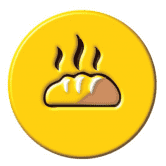 BakedBuns.Farm Cronos 链上的去中心化面包店在 $CRO 中产生 6% 的每日投资回报率 几乎每个人都渴望通过可持续的+高产农业来投入一些诚实的钱，这就是我们在 CRONOS 厨房背
Bakedpeanuts 烤花生是最好的& 在 BSC 上发展 BNB 的可持续方式。 投资者每天可赚取高达 8% 的收益 12% 的推荐。 Bakedpeanuts 是增长最快的 BNB 矿工。 欢迎来到烘焙花生在币安智能链上
Balance Network 将创建 BLN 作为 Balance Network 平台的货币，并执行一些行动，例如奖励社区和投资 Balance Network 生态系统。 将创建 300.000.000 BLN 代币将用作 Balance Network 平台 NFT 生态系统中的实用程序，既作为原生协
BambooDeFi BambooDeFi 现在是 Binance 智能链 的一部分，在 PancackeSwap 平台上运行并允许 Bamboo 代币持有者转换其 ERC-20通过在 ETH 部分的 www.BambooDeFi.com 上部署和访问的网桥连接到 BEP-20。 经过Red
Bankroll Network Bankroll 是 TRON 和以太坊上首屈一指的去中心化金融网络。 它实现了一个自愿的、可持续的和无需许可的全球经济引擎。 通过金融合约网络，该平台提供 TRX、ETH
BarnBridge Barnbridge 是一个想法 & 白皮书最初是在 2019 年第二季度构思的。当时，MakerDAO 开始获得主流意识，并激发了现在被称为 DeFi 或去中心化金融社区的想象力。 一年
Barter Smartplace Barter Smartplace 有一个关键功能 - 基于使用电子签名的数字法律合同进行交易。今天，随着技术和法律框架的发展，通过数字通信远程签订贸易协议和签署法律文件已成为
BasementDwellers V2 Basement Dwellers 是一个受 meme 文化和游戏玩家刻板印象启发的项目。 如果您在语音聊天中与您的朋友进行 meme 交流时，已经连续几个小时坐下来研究您最喜欢的游戏，那么您将
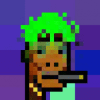 Bastard Gan Punks V2 BASTARD GAN PUNKS 的第 2 版比 BOOMER CRYPTOPUNKS 和 BOOMER CRYPTOPUNKS 更酷、更好、更傻。 版本 1 混蛋 GAN 朋克。 这一次，所有 CRYPTOPUNK 属性都被提取出来，并用 GAN 训练了它们所有组合的新数据集，以生出更多
Bastille De La Bouje Bastille De La Bouje 是 Bouje Finance 生态系统的第三层，重新引入了坚实的 APR 重置概念，专注于用户的安全性和可持续性，此外还拥有动态 APR 结构，以最大限度地提高用户收益并为
Battle Derps Battle Derps 是一款自上而下的多人 PVP 射击游戏，适用于桌面和移动 metamask 浏览器。 第一季已经开始，将在大约 1 个月后结束。 目前，我们的目标是生存并尽可能多地杀死敌
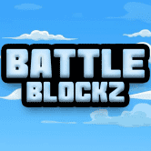 BattleBlockz BattleBlockz 是 Zexie Studios 打造的第一款 3D 竞技 WAX 游戏。区块链已被一个名为 The Ravenous 的派系感染。你会选择加入他们的世界统治目标，还是与 The Collective 联手拯救我们所钦佩的 The Wax 区块链
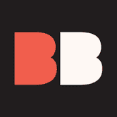 Bauhaus Blocks Bauhaus Blocks 是 8192 个可证明稀有的受包豪斯启发的 NFT 的生成集合。 由 372 个独特的块以四种不同的格式和调色板连接而成。 第一个“风格指南”，包豪斯引发
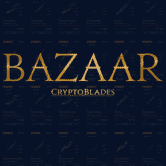 Bazaar Marketplace Bazaar Marketplace 支持任何符合 ERC-721 标准的 NFT，并将其置于世界上产量最高的 NFT 游戏之一 CryptoBlades 的前面。 您不仅可以查看您的 NFT 的具体详细信息，而且我们的费用